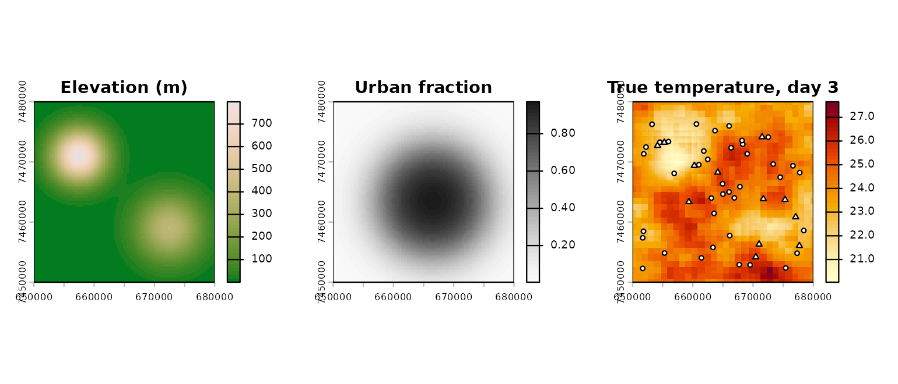

bruce turns scattered temperature readings from networks
of very different quality into daily maps for a whole city. This article
walks through the full workflow on a synthetic city, so every step can
be checked against a known truth.
Code that fits models needs R-INLA and is shown but not run when this page is built; everything else runs.
A synthetic city
bruce_simulate() invents a 30 km city with two hills, an
urban core, 12 reference stations, 40 low-cost sensors that read 1.5 °C
too warm, and a coarse reanalysis-like background. It returns the “true”
temperature on every pixel, which real data never gives us.
library(bruce)
sim <- bruce_simulate(n_reference = 12, n_biased = 40, n_days = 5, seed = 1)
head(sim$obs)
#> station_id date value truth
#> 1 REF01 2025-01-01 27.61612 27.36747
#> 2 REF02 2025-01-01 27.74348 27.75385
#> 3 REF03 2025-01-01 28.51989 28.04309
#> 4 REF04 2025-01-01 27.01882 27.10761
#> 5 REF05 2025-01-01 29.10219 28.70484
#> 6 REF06 2025-01-01 27.62704 27.98792
sim$sources
#> source bias obs_sd
#> 1 reference FALSE 0.3
#> 2 lowcost TRUE NA
op <- par(mfrow = c(1, 3), mar = c(2, 2, 3, 4))
terra::plot(sim$covariates$elev, main = "Elevation (m)",
col = hcl.colors(50, "Terrain 2"))
terra::plot(sim$covariates$urb, main = "Urban fraction",
col = hcl.colors(50, "Grays", rev = TRUE))
terra::plot(sim$truth[[3]], main = "True temperature, day 3",
col = hcl.colors(50, "YlOrRd", rev = TRUE))
ref <- sim$stations$source == "reference"
points(sim$stations$x, sim$stations$y, pch = ifelse(ref, 24, 21),
bg = "white", cex = 0.7)
par(op)1. Declare the data
Everything city-specific enters through one call.
sources says which networks are trusted
(bias = FALSE) and which get an estimated offset, and
whether each network’s noise is known (obs_sd) or estimated
(NA).
d <- bruce_data(sim$obs, sim$stations, sim$sources, crs = sim$crs,
background = sim$background)
d <- bruce_covariates(d, sim$covariates, background_buffer = 4500)
d
#> <bruce_data>
#> 260 observations, 52 stations, 2025-01-01 to 2025-01-05
#> source role obs_sd n_obs
#> lowcost biased NA 200
#> reference reference 0.3 60
#> background: 45 cells x days (sd = 0.70)
#> covariates: elev, urbFor a real city the same four objects come from your own databases:
one row per station and day in obs, coordinates in
stations, and a small table describing each network.
2. Mesh and specification
mesh <- bruce_mesh(d)
spec <- bruce_spec() # defaults: range prior anchored on station spacing, collapse handling onbruce_spec() holds every modelling decision: priors,
whether to include the station and daily terms, and what to do if the
spatial field degenerates.
3. Fit
fit <- bruce_fit(d, mesh, spec, keep_config = TRUE)
summary(fit)
bruce_check(fit) # each fitting attempt and whether the field collapsedWhen the day-to-day correlation of the field drifts to 1 (a failure
seen with clustered sensor networks), bruce_fit() restarts
the optimiser and, if needed, refits with that correlation fixed. Every
attempt is recorded.
4. Predict, decompose, aggregate
pred <- bruce_predict(fit, n_samples = 200, keep_samples = TRUE)
terra::plot(pred$mean[[3]])
dec <- bruce_decompose(fit)
plot(dec, date = "2025-01-03") # total, covariate part, spatial field
zones <- sf::st_sf(zone = "city", geometry = sf::st_geometry(sim$domain))
bruce_zonal(pred, zones, "zone")
# long table (cell x day) for dplyr/ggplot2
library(dplyr); library(ggplot2)
as_tibble(pred) |>
filter(date == min(date)) |>
ggplot(aes(x, y, fill = mean)) + geom_raster() + coord_equal()bruce_decompose() splits each day’s surface into the
part explained by covariates and the spatial field learned from
stations, and reports how much of the spatial variance each carries,
including their covariance.
5. Validate
cv <- bruce_cv(fit, checkpoint_dir = "cv_lso")
cvGiven the fit, bruce_cv() reuses its data, mesh and
specification, and starts every fold from its hyperparameters, which
gives the same answer as starting from scratch, only faster. By default
it scores the reading of a new station at the held-out location (field,
network offset, a new station effect and measurement noise), so coverage
close to the nominal level means calibrated intervals; the field-only
coverage is reported alongside.
Leave-station-out ("lso") removes one reference station
per fold; leave-region-out ("lro") removes every station in
a region, a harder test of how the map behaves where there is no data.
Each fold is saved as it finishes, so long runs can be resumed.
Using your own city
The only requirement is the data contract: daily values per station,
station coordinates with a network label, a table describing the
networks, and covariate rasters. An optional gridded product on the same
variable (e.g. ERA5-Land) can be added as background. The
analises/rio folder of the repository shows the mapping
used for Rio de Janeiro.